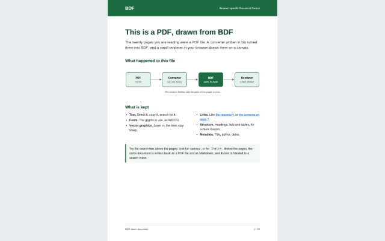
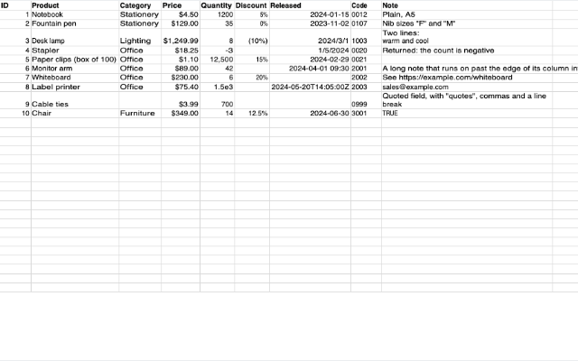
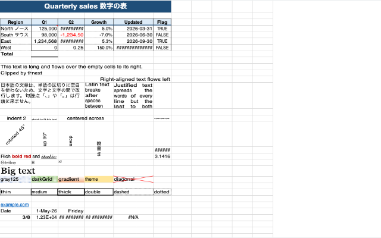
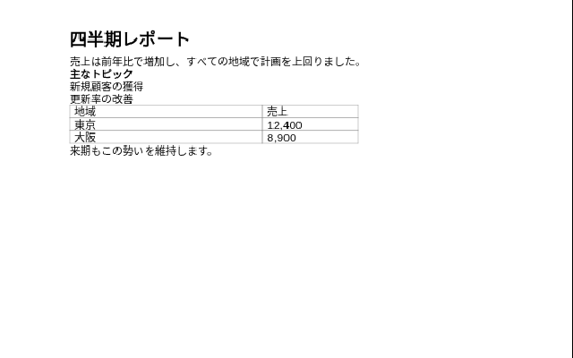
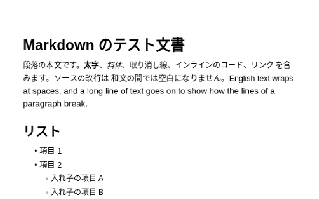
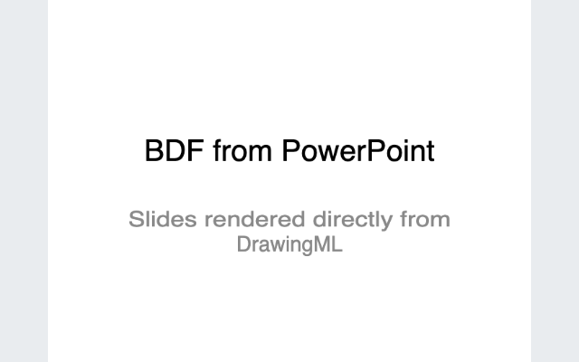
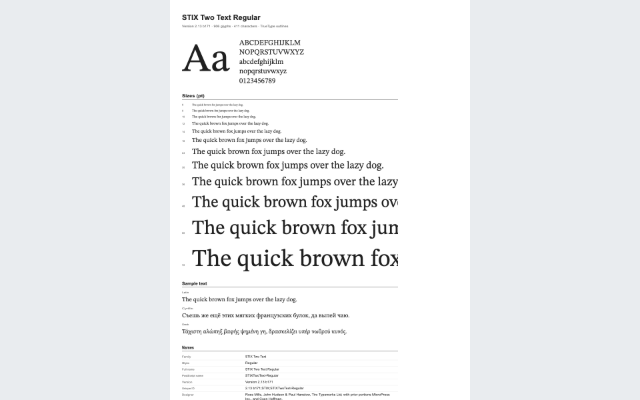

BROWSER DOCUMENT FORMAT
ドキュメントを、ブラウザで。
BDF の表示、検索、PDF（暗号化・JPX/JBIG2・Type3・タイルパターン）、Word・PowerPoint・Markdown・EPUB・CSV・Excel・画像・フォント・AI・TIFF・Photoshop・EMF/WMF の変換を試せます。ファイルをドロップするか、サンプルを開いてください。
デモ文書
BDF を保存 ↓ROUND TRIP
BDF から描き戻す
表示している BDF を、PDF・Markdown・検索用テキストに書き出します。変換はこのブラウザの中で動きます。
対象: 文書を開いてください
ページを PDF ファイルに書き出します。文書のフォントを埋め込み、リンクも残します。グラデーションは近似し、マスク・フィルタ・画像・タグ付き構造は省略します。できたファイルはブラウザの PDF ビューアで下に表示します。
bdf pdf demo.bdf demo-from-bdf.pdf同じレコードを MiniSearch でブラウザの中に索引づけします。1 ページが 1 レコード、日本語は隣り合う 2 文字の組（バイグラム）で索引づけます。ヒットを選ぶと上の文書がそのページを開きます。
import MiniSearch from "minisearch";BENCHMARKS
文書変換が速く、メモリと電力も少なく
同じ Office ファイルを LibreOffice + Poppler と BDF の Go 変換器で処理した上流の参考値です。このページの書き出し時間は「このブラウザでの実測」に表示します。
- 94%文書あたりの推定 SoC エネルギーを削減
- 470×合成 PPTX · 100 スライドの変換が高速
- 47×合成 PPTX · 100 スライドの最大 RSS が少ない
変換＋サムネイル作成の経過時間（中央値）
小さい DOCX
LibreOffice + Poppler0.69 s
BDF（Go）0.05 s
小さい PPTX
LibreOffice + Poppler1.01 s
BDF（Go）0.03 s
合成 PPTX · 100 スライド
LibreOffice + Poppler56.38 s
BDF（Go）0.12 s
最大 RSS（中央値）
小さい DOCX
LibreOffice + Poppler161.8 MiB
BDF（Go）43.4 MiB
小さい PPTX
LibreOffice + Poppler147.3 MiB
BDF（Go）38.2 MiB
合成 PPTX · 100 スライド
LibreOffice + Poppler1,918.9 MiB
BDF（Go）40.8 MiB
1 文書あたりの推定 SoC エネルギー
小さい DOCX・PPTX・XLSX の平均
LibreOffice + Poppler4.27 J
BDF（Go）0.24 J
時間と最大 RSS は変換と先頭ページの 256 px サムネイル作成までを新規プロセスで計測した 5 回の中央値。エネルギーは 3 ラウンドの範囲から算出した推定値です。
このブラウザでの実測: まだ書き出していません
SAME INPUT · UPSTREAM + BDF.MBT
上流 BDF (Go) と bdf.mbt の計測
同じ20ページの BDF と20ページの PDF を、上流 BDF (Go) と bdf.mbt の JavaScript / wasm-gc 実装で処理した実測値です。上流 Go は CLI のプロセス起動とファイル書き出し込み、bdf.mbt はブラウザ内のウォーム済み関数。ウォームアップ2回の後に7回測った中央値です。
| 処理 | 上流 BDF (Go) | bdf.mbt JS | bdf.mbt wasm-gc | 対象 |
|---|---|---|---|---|
| 計測データを読み込んでいます… | ||||
上流の Office 変換カードは入力が異なるため、ここでは同じ BDF / PDF を使った上流 BDF (Go) CLI と比較しています。上流 Go は CLI 実行（起動込み）、bdf.mbt はブラウザ内のメモリ内処理です。PDF の圧縮・フォント埋め込み方式は異なるため、時間は実装と実行方法の目安です。MiniSearch は bdf.mbt の JavaScript 索引のみなので、上流と wasm-gc の列は「—」です。
EXPLORE DOCUMENTS
文書のかたちに合わせたプレビュー
サンプルをビューアで開いて、表示や検索を試せます。






ブラウザで試す
ファイルを開くかビューアにドロップすると、このブラウザ内で処理します。
サンプルとライセンス
文書サンプルの元データ: MIT ライセンス。埋め込みフォント: Liberation、IPA、WenQuanYi。フォント見本: STIX Two Text（SIL Open Font License）。Excel サンプル: MIT ライセンス。MiniSearch: MIT ライセンス。